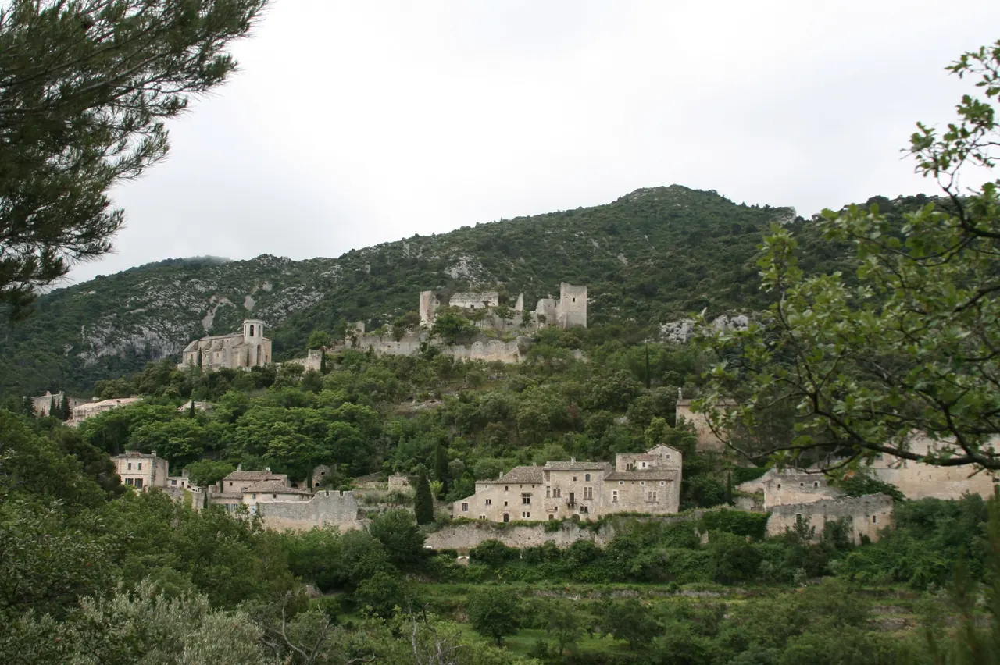

Oppède-le-Vieux

| 지역 | Luberon |
|---|---|
| 등급 | Backup |
| 언제 | 일정에 배정된 날을 시간표에서 찾지 못했다 |
| 상세 | 챕터 본문에서 보기 |
참고
오프라인입니다. 위키백과와 지도 링크는 연결되면 다시 동작합니다.
버려졌던 마을이다. 주민들이 경작지 가까운 평지로 내려가면서 능선 위 원마을은 폐허가 됐고, 20세기에 예술가들이 되살렸다 — 지금도 절반은 복원, 절반은 폐허 그대로다. 협동조합 형태로 정비된 주차장에서 표지판을 따라 15분 남짓 오르면 성당과 성터에 닿는다. 주차장에서 마을까지 오르막 산길을 걸어야 해서 방문 자체가 짧은 하이킹이다.
더 드라마틱한 대안이다. 폐허와 오르막이 있다.
A안과 B안의 차이는 체력이다 메네르브는 균형이 좋고, 오페드는 오르막과 폐허의 긴장감이 있다. 43일 중 19일차라는 점을 감안해 판단한다.
조사 필요